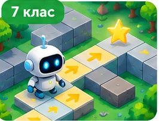

П’ять історій, у яких Ви не читаєте готову відповідь — Ви її знаходите. Обирайте клас, досліджуйте, експериментуйте, помиляйтеся та створюйте власний результат.
🎮 5 різних механік · 📱 Для смартфона · 🔓 Без реєстрації · 📄 Один звіт PDF

5 КЛАС · ІНФОРМАЦІЙНИЙ ПОШУК
Місто загубленої інформації
У місті зникла афіша благодійного ярмарку. Дізнайтеся, коли він відбудеться, і не повірте чуткам.
🔎 Місія: знайдіть точні дату й місце шкільного ярмарку. Дослідіть щонайменше три джерела. Не всі вони однаково надійні.
🗺️ Інтерактивна карта міста
Натискайте на будівлі, читайте повідомлення й порівнюйте докази.
🗂️ Ваш блокнот дослідника
Відвідайте місця на карті, щоб зібрати свідчення.
Оберіть висновок
💡 Відкриття
Яким джерелам Ви довіряли більше — і чому? Складіть три правила перевірки повідомлень для однокласників.
🎨 Виклик: чому зображення виглядає чітким або розмитим? Намалюйте власний символ школи на сітці 12×12 та перевірте, як змінюється деталізація.
🖌️ Редактор пікселів
Оберіть колір і торкайтеся клітинок. Можна проводити пальцем або мишею.
🔬 Експеримент із роздільністю
Зменште роздільність до 6×6 і порівняйте результат.
Змініть масштаб і спостерігайте.
🎯 Мінігра
Спробуйте створити впізнавану іконку, використавши не більше 3 кольорів.
🤖 Виклик: робот має зібрати ⭐ та дійти до 🏁, не врізавшись у перешкоди. Спочатку складіть програму, а потім запустіть симуляцію.
🧩 Поле робота
Старт 🤖 · Зірка ⭐ · Фініш 🏁 · Стіни ⬛
🧱 Конструктор алгоритму
Додавайте команди кнопками або перетягуйте їх у програму.
Перетягніть сюди команди або натискайте кнопки.
🏆 Додатковий виклик
Знайдіть найкоротший маршрут. Чи можна скоротити Ваш алгоритм? Перевірте його повторно після змін.
☕ Виклик: шкільне кафе має продати лимонад, але надто висока ціна зменшує попит. Знайдіть вигідну ціну й перевірте, що станеться під час дощу або свята.
🎛️ Керуйте кафе
Попит—
Виручка—
Прибуток—
📊 Жива діаграма прибутку
Порівняйте кілька стратегій. Стовпчики будуються за Вашими експериментами.
💡 Відкриття
Чи завжди вища ціна означає більший прибуток? Обґрунтуйте висновок даними з Вашої моделі.
🕵️ Справa: у шкільному музеї зник експонат E-04. Знайдіть, хто останнім брав його для виставки. Для цього поєднайте дані з трьох таблиць.
🗄️ Досліджуйте пов’язані таблиці
Порівняйте ключі item_id і person_id між таблицями.
🧠 Конструктор запиту
🔐 Назвіть відповідального
Хто останнім отримав E-04 і ще не повернув його?
Пам’ятайте: запис про видачу не доводить крадіжку. Це лише підстава уточнити місцезнаходження експоната.
📝 Ваше відкриття і мініпроєкт
Що допомогло відрізнити факт від чутки? Запропонуйте власну інформаційну місію.